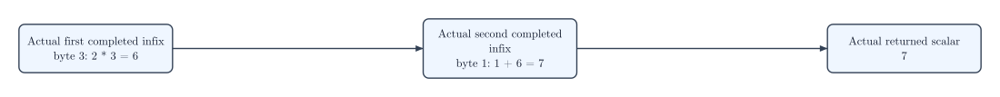
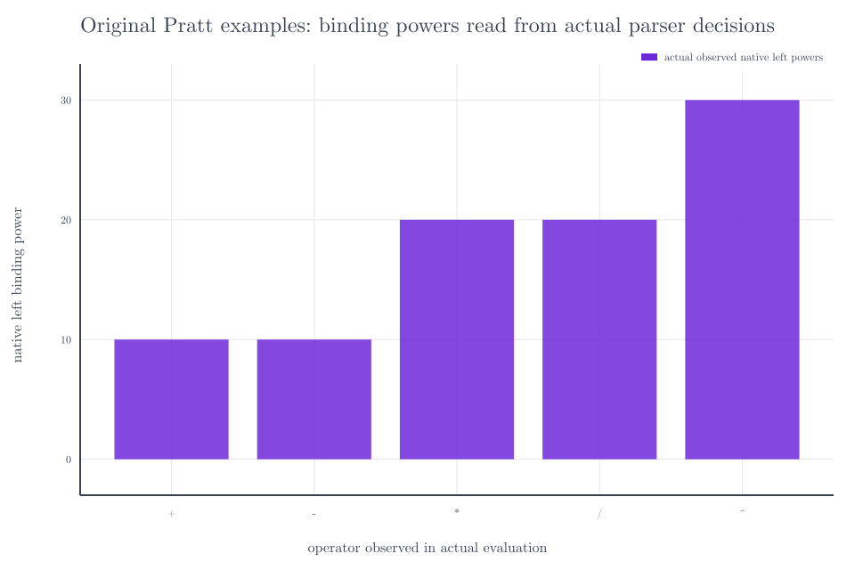
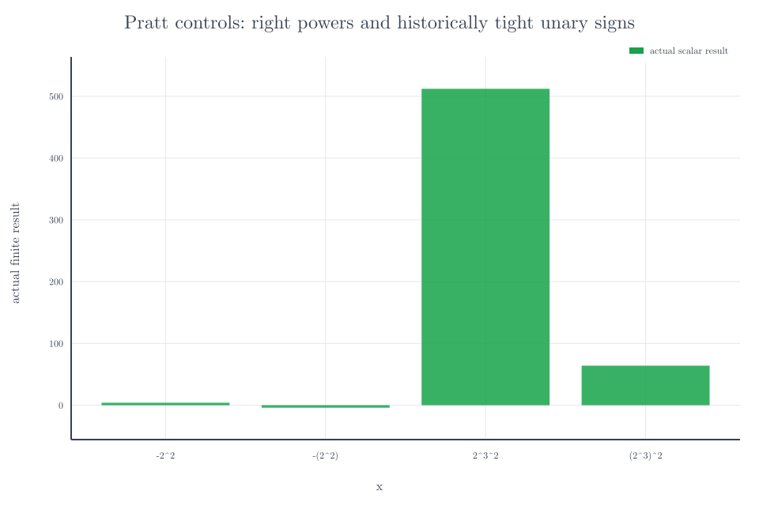
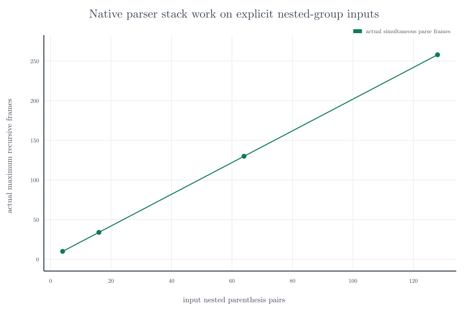

Pratt evaluation: actual binding decisions and completed operations
Abstract
A binding comparison decides whether the next operator belongs to the current expression or to its caller. The native evaluator now records those comparisons and the values actually computed during recursive evaluation. The tiny example 1+2*3 makes the multiplication finish before the addition. The original precedence and right-associative power examples remain; no abstract syntax tree or second parser reconstructs their histories.
Mechanism and mathematical scope
A tiny actual producing history
The table and native concept diagram read the same producing execution. Every block below is a complete editable C++ program.
#include <dm/dm.hpp>
int main() {
namespace a = dm::algorithms;
namespace g = dm::graphics;
std::filesystem::create_directories("build");
auto t = a::pratt_trace("1+2*3");
std::vector<a::PrattEvent> operations;
std::print("\n| actual operator offset | operator | actual left | actual right | actual result |\n| " "---: | --- | ---: | ---: | ---: |\n");
for (auto &e : t.events)
if (e.kind == a::PrattEventKind::Infix) {
operations.push_back(e);
std::print("| {} | {} | {} | {} | {} |\n", e.offset, e.op, e.lhs, e.rhs,
e.value);
}
g::Diagram d;
d.node("n0", {0, 0},
std::format("Actual first completed infix\nbyte {}: {} * {} = {}",
operations[0].offset, operations[0].lhs,
operations[0].rhs, operations[0].value));
d.node("n1", {10, 0},
std::format("Actual second completed infix\nbyte {}: {} + {} = {}",
operations[1].offset, operations[1].lhs,
operations[1].rhs, operations[1].value));
d.node("n2", {20, 0},
std::format("Actual returned scalar\n{}", t.run.value));
d.edge("n0", "n1").edge("n1", "n2");
d.save_svg("build/pratt_tiny.svg");
}| actual operator offset | operator | actual left | actual right | actual result |
|---|---|---|---|---|
| 3 | * | 2 | 3 | 6 |
| 1 | + | 1 | 6 | 7 |

The retained original experiment
#include <dm/dm.hpp>
int main() {
namespace a = dm::algorithms;
namespace g = dm::graphics;
std::filesystem::create_directories("build");
std::vector<std::string> expressions{"1+2*3", "2*3+4", "(1+2)*3", "2^3+1",
"2+3^2", "2^3^2"};
std::map<char, int> powers;
std::print("\n| original expression | actual returned value | actual completed infix operations |\n| " "--- | ---: | ---: |\n");
for (auto &e : expressions) {
auto t = a::pratt_trace(e);
std::print("| `{}` | {} | {} |\n", e, t.run.value,
t.run.infix_operations);
for (auto &event : t.events)
if (event.kind == a::PrattEventKind::Binding &&
event.left_binding_power)
powers[event.op] = event.left_binding_power;
}
for (auto &event : a::pratt_trace("8-4/2").events)
if (event.kind == a::PrattEventKind::Binding && event.left_binding_power)
powers[event.op] = event.left_binding_power;
std::vector<double> v;
std::vector<std::string> labels;
for (char op : std::string("+-*/^")) {
v.push_back(powers.at(op));
labels.push_back(std::string(1, op));
}
auto p =
g::RPlot::barplot(v, labels, "actual observed native left powers",
{109, 40, 217});
p.title("Original Pratt examples: binding powers read from actual parser decisions").x_label("operator observed in actual evaluation").y_label("native left binding power");
p.save_svg("build/pratt_original.svg");
}| original expression | actual returned value | actual completed infix operations |
|---|---|---|
1+2*3 | 7 | 2 |
2*3+4 | 10 | 2 |
(1+2)*3 | 9 | 2 |
2^3+1 | 9 | 2 |
2+3^2 | 11 | 2 |
2^3^2 | 512 | 2 |

Explicit controls
#include <dm/dm.hpp>
int main() {
namespace a = dm::algorithms;
namespace g = dm::graphics;
std::filesystem::create_directories("build");
std::vector<std::string> expressions{"-2^2", "-(2^2)", "2^3^2", "(2^3)^2"};
std::vector<double> v;
std::print("\n| grammar control | actual returned value |\n| --- | ---: |\n");
for (auto &e : expressions) {
auto r = a::pratt_run(e);
v.push_back(r.value);
std::print("| `{}` | {} |\n", e, r.value);
}
bool token = false, nul = false, nonfinite = false;
try {
a::pratt_eval("1.2.3");
} catch (const std::runtime_error &) {
token = true;
}
try {
a::pratt_eval(std::string("1\0+2", 4));
} catch (const std::runtime_error &) {
nul = true;
}
try {
a::pratt_eval("1/0");
} catch (const std::overflow_error &) {
nonfinite = true;
}
std::print("Partial decimal rejected: {}; embedded NUL rejected: {}; nonfinite arithmetic rejected: " "{}.\n",
token, nul, nonfinite);
auto p = g::RPlot::barplot(v, expressions, "actual scalar result");
p.title("Pratt controls: right powers and historically tight unary signs").y_label("actual finite result");
p.save_svg("build/pratt_controls.svg");
}| grammar control | actual returned value |
|---|---|
-2^2 | 4 |
-(2^2) | -4 |
2^3^2 | 512 |
(2^3)^2 | 64 |
Partial decimal rejected: true; embedded NUL rejected: true; nonfinite arithmetic rejected: true.

Actual selected work and sensitivity
#include <dm/dm.hpp>
int main() {
namespace a = dm::algorithms;
namespace g = dm::graphics;
std::filesystem::create_directories("build");
std::vector<double> x, y;
std::print("\n| explicit parenthesis depth | actual recursive maximum | actual binding checks | actual " "selected parser events |\n| ---: | ---: | ---: | ---: |\n");
for (std::size_t depth : {4, 16, 64, 128}) {
auto expression =
std::string(depth, '(') + "1" + std::string(depth, ')');
auto r = a::pratt_run(expression);
x.push_back(depth);
y.push_back(r.maximum_depth);
std::print("| {} | {} | {} | {} |\n", depth, r.maximum_depth,
r.binding_checks, r.operations);
}
auto p = g::RPlot::create();
p.lines(x, y, "actual simultaneous parse frames", {16, 122, 87}).points(
x, y, {16, 122, 87}, 5).title("Native parser stack work on explicit nested-group inputs").x_label("input nested parenthesis pairs").y_label("actual maximum recursive frames");
p.save_svg("build/pratt_work.svg");
}| explicit parenthesis depth | actual recursive maximum | actual binding checks | actual selected parser events |
|---|---|---|---|
| 4 | 10 | 5 | 20 |
| 16 | 34 | 17 | 68 |
| 64 | 130 | 65 | 260 |
| 128 | 258 | 129 | 516 |

API and interpretation
This grammar uses decimal tokens without exponent notation; complete conversion and complete byte consumption are now checked. Unary signs bind as atoms, so-2^2 is4 here, unlike conventions where power binds before unary minus. Runtime syntax errors, selected depth/work/history limits and nonfinite arithmetic failures are distinct. The selected event count excludes the internals of decimal conversion, exponentiation and whitespace scanning; it is not a wall-time benchmark.
Reusable producers, fixtures and histories live in the canonical C++ library. Captured records own their values and do not come from a separate report replay. Selected counters and record/scalar policies are specified at their API boundaries; they are not peak-byte or wall-time budgets. Synthetic structural inputs are controlled fixtures for these mechanisms.
References
Verified in the shared ten-document batch: 106 algorithm CTest cases plus90 graphics cases;21 directly instrumented algorithm ASan/UBSan cases and renderer SVG/PNG sanitizer probe;119 executable public examples;587/587 scoped definitions plus9 changed legend definitions;10 hovers;56287 independent records/278204 checks;frozen compatibility for all ten algorithm families;13 checkout/installed standalone headers and linked consumer;40 executed programs/40 reviewed figures with both exports. The legacy source is retired only after these gates pass.